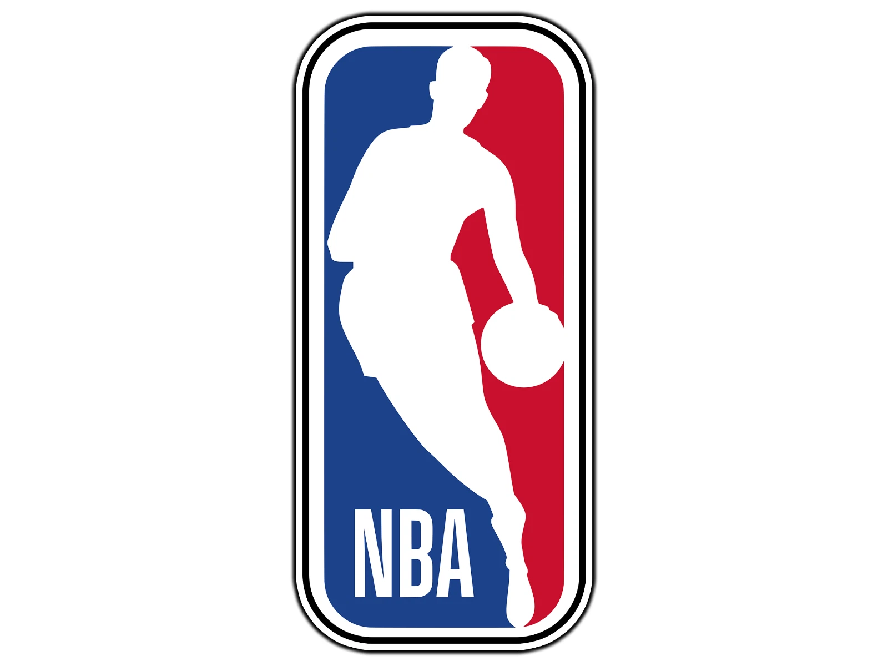

I want to be completely honest with you about why I'm writing this letter. This isn't a career move I'm making because the role sounds interesting or because the package might be right. This is a dream. I've been watching the NBA since I was a kid dribbling on a court in Cairo, playing through youth competition across Egypt and the region, and spending the last 25 years studying the sport — its culture, its players, its evolution from American league to global religion. I coach basketball. I live basketball. And I've spent two decades building the kind of events, activations, and fan experiences that this role is made for.
I know that's an emotional opening for a professional letter. But I think it matters — because the NBA doesn't just need someone who can manage event logistics. It needs someone who genuinely understands what the game means to people. I do. Not as an observer. As someone who has been on the court, in the coaching box, and in arenas across the world, feeling exactly what a great basketball experience feels like from the inside.
My career in events began in Dubai, where I built Sphere Events from a one-person operation into a 140-person agency delivering over 150 projects per year and USD 8M+ in revenue. I ran public events for tens of thousands of people — music festivals, food festivals, street activations — and worked with global brands on experiences that had to be both creatively bold and operationally flawless. That duality — creativity without chaos — is something I've always believed in and built toward.
More recently, I've delivered global activations at a scale that genuinely tests you: end-to-end programs for COP 27, COP 26, and COP 29, coordinating multinational teams across governments, corporations, and hundreds of moving parts in locations from Egypt to the UAE to Azerbaijan. If I can make that work on time, on message, and on budget — I can make anything work.
I'm not coming to the NBA as someone who needs to be taught to love the game. I'm coming as a basketball lifer who learned how to build extraordinary experiences for a living — and who now has the chance to do both things at once, in the most important sporting organization in the world. That's not a job. That's a calling.
I'd be genuinely honored to explore this further. I'm available at any time, in any timezone, and can be wherever you need me to be.
With respect and real enthusiasm for this conversation,